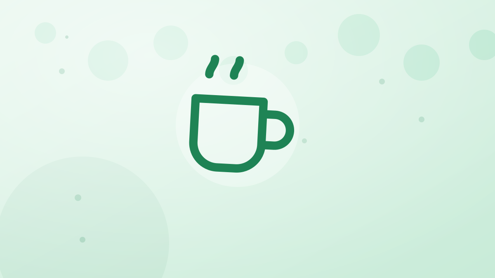

Calorías del desayuno español: café con leche, tostada con tomate, churros y zumo
Un café con leche son 91 kcal y una ración de churros con chocolate, 531. Entre uno y otro hay seis desayunos de bar y de casa, cada uno con su cifra por ración, y los cambios que ahorran sin renunciar al desayuno.

El desayuno es la comida que más se repite igual todos los días, y por eso es la que más pesa al final de la semana. Un error de 150 kcal en el desayuno son más de 1.000 a la semana. Estos son los desayunos que se piden en un bar o se hacen en casa en España, pieza a pieza y con la ración tal como se sirve. Las cifras son las de la app: salen de las páginas de calorías de los platos españoles, calculadas ingrediente a ingrediente con datos de USDA FoodData Central y CIQUAL 2025.
Cuántas calorías tiene cada pieza
- Café con leche, taza de 200 ml: 91 kcal. Con leche desnatada, 53. Un cortado, 21; un café solo, 2.
- Tostada con tomate y aceite, 90 g: 235 kcal. Sólo con aceite, 70 g: 165. Integral con tomate: 200.
- Pan con jamón serrano, 90 g: 231 kcal y 13 g de proteína.
- Croissant, 60 g: 252 kcal; a la plancha con mantequilla, 351.
- Napolitana de chocolate, 70 g: 296 kcal. Una magdalena, 154.
- Zumo de naranja natural, vaso de 200 ml: 90 kcal. Una naranja entera, 65.
- Churros con chocolate, ración de 200 g: 531 kcal.
- Huevo cocido: 85 kcal y 7 g de proteína.
Seis desayunos, de menos a más
- Café solo y tostada con aceite: 167 kcal. El más ligero, y el que antes da hambre: 4 g de proteína.
- Café con leche y tostada con tomate y aceite: 326 kcal. El desayuno de bar por excelencia. Correcto en calorías, corto en proteína (unos 10 g).
- Café con leche y napolitana de chocolate: 387 kcal. Sesenta más que el anterior y con la mitad de saciedad.
- Café con leche, pan con jamón y un huevo cocido: 407 kcal. Unos 25 g de proteína: el que mejor aguanta hasta la comida.
- Café con leche, croissant y zumo de naranja: 433 kcal. El «desayuno completo» de muchas cartas. El zumo suma 90 kcal que no quitan el hambre.
- Churros con chocolate: 531 kcal. Un desayuno de domingo, no de diario: un tercio de las calorías de un día con déficit.
Entre el primero y el último hay 364 kcal, casi las de un plato de lentejas. Ninguno es «malo»; la diferencia está en cuál se pide cinco días a la semana.
Qué representa en un día
Con el ejemplo de la calculadora de calorías diarias, una mujer con un gasto de 2.130 kcal que hace un déficit de 500 tiene 1.630 kcal para todo el día. El desayuno de bar de café y tostada es el 20 %; el de croissant y zumo, el 27 %; los churros, el 33 %. Para un hombre con 2.280 kcal de objetivo, los mismos churros son el 23 %. No hace falta renunciar a ninguno: hace falta saber que el resto del día tiene que encajar.
Los cambios que más ahorran
- Leche desnatada en el café: 38 kcal menos por taza, 266 a la semana si es diario, sin cambiar nada más.
- Naranja entera en vez de zumo: 25 kcal menos y la fibra que el exprimidor tira; sacia más.
- Pan con jamón en vez de napolitana: 65 kcal menos y 8 g más de proteína.
- Un huevo cocido junto a la tostada: sube el desayuno a unos 400 kcal, pero con 25 g de proteína se llega a la comida sin picar a media mañana. Muchas veces ahorra más de lo que añade.
- Los churros, el día que tocan: sin culpa y sin «compensar» saltándose la comida; se apuntan y el resto del día se ajusta.
Cómo apuntar el desayuno en diez segundos
Como se repite, se registra una vez y se guarda. Con una foto del plato salen las calorías y los macros de la tostada o del croissant; el café se añade a mano. Si el desayuno es de bolsa (galletas, cereales, un yogur), el escáner de código de barras lee la etiqueta. El plan gratis tiene 2 escaneos con IA y 1 registro por voz al día; código de barras y Coach Kal sin límite, y no pide tarjeta.
Ideas clave
- Un café con leche son 91 kcal; con tostada con tomate y aceite, 326. Es el desayuno de referencia.
- Los desayunos de bar van de 167 a 531 kcal según la pieza; la diferencia la deciden la bollería, el zumo y los churros.
- Lo que más ahorra sin notarse: leche desnatada, fruta entera en vez de zumo y jamón en vez de bollería.
- La proteína del desayuno decide el hambre de media mañana: un huevo o jamón lo arreglan.
Preguntas que hace la gente
¿Cuántas calorías tiene un café con leche?
Una taza de 200 ml con leche entera, unas 91 kcal según la tabla de la app; con leche desnatada, 53. Un cortado son 21 y un café solo, 2. El azúcar va aparte: cada sobre de 8 g son unas 32 kcal.
¿Cuántas calorías tiene una tostada con tomate y aceite?
Unas 235 kcal la tostada de 90 g de bar, con tomate y su chorro de aceite. Sólo con aceite, la de 70 g son 165; la integral con tomate, 200. Lo que más cambia de una a otra es la cantidad de aceite.
¿Qué desayuno español tiene menos calorías?
De los habituales, café solo con tostada con aceite (unas 167 kcal) o café con leche desnatada con tostada con tomate (unas 288). Para que además sacie, mejor café con leche, pan con jamón y un huevo cocido: unas 407 kcal con 25 g de proteína.
Este artículo es información general, no consejo médico.
Herramientas para este tema: Calorías del café con leche · Calorías de la tostada con tomate y aceite · Calculadora de calorías diarias